<!doctype html>
<html>
  <head>
    <meta charset="utf-8">
    <meta name="viewport" content="width=device-width, initial-scale=1.0, maximum-scale=1.0, user-scalable=no">

    <title>If You Can't Measure It, You Can't Improve It</title>

    <link rel="stylesheet" href="reveal.js/css/reveal.css">
    <link rel="stylesheet" href="reveal.js/css/theme/white.css" id="theme">
    <link rel="stylesheet" href="extensions/plugin/line-numbers/line-numbers.css">
    <link rel="stylesheet" href="extensions/css/highlight-styles/default.css">
    <link rel="stylesheet" href="extensions/css/custom.css">

    <style>
      .reveal h1, .reveal h2, .reveal h3, .reveal h4, .reveal h5 { text-transform: none; }
    </style>

    <script>
      var link = document.createelement( 'link' );
      link.rel = 'stylesheet';
      link.type = 'text/css';
      link.href = window.location.search.match( /print-pdf/gi ) ? 'reveal.js/css/print/pdf.css' : 'reveal.js/css/print/paper.css';
      document.getelementsbytagname( 'head' )[0].appendchild( link );

      function set_address(self, remote, local) {
        if (window.location.search.match("local")) {
          self.href = local;
        } else {
          self.href = remote;
        }
      }
    </script>

    <meta name="apple-mobile-web-app-capable" content="yes">
    <meta name="apple-mobile-web-app-status-bar-style" content="black-translucent">
  </head>

  <body>
    <div class="reveal">
      <div class="slides">
          <script type="text/template">
          </script>
          </section>

          <section data-markdown=""
                   data-separator="^====+$"
                   data-separator-vertical="^----+$">
          <script type="text/template">
<!-- .element: data-background-image="images/title.png" data-background-size="100%" data-background-color="black" -->

----

### Motivation
<!-- .element: style="text-align:left" -->

----


##### "`perf or nah`?"

<!-- .element: style="text-align:left;" -->

```cpp
 Adding a 'try/catch' that never throws?
 Adding a 'branch' that is never taken?
 Adding an 'unused function'?

 Removing 'dead code'?
 Enabling 'debug symbols' in an optimized build?

 Running with 'instrumentation, tracing, profiling' enabled?
 Running as a 'different user'?
 ...
```

What affects performance? if so, how much and why?
<!-- .element: style="text-align:right; font-size:22px;" -->

----

#### Performance
<!-- .element: style="text-align:left" -->

<table style="margin:0; padding:0; border-collapse:collapse; width:100%;">
  <tr>
  <td>
  <pre style="font-size:12px">
(~) Frequency
 - Base:  3–5 ghz
 - Boost: 5–6 ghz
 - Overclocked: ~9 ghz</pre>
  <pre style="font-size:12px">
(⬆️) Transistors
 - More Cores
 - More Caches
 - Improved Execution
 - Improved Parallelism&nbsp;
 - ...
</pre>
  </td>
  <td>
    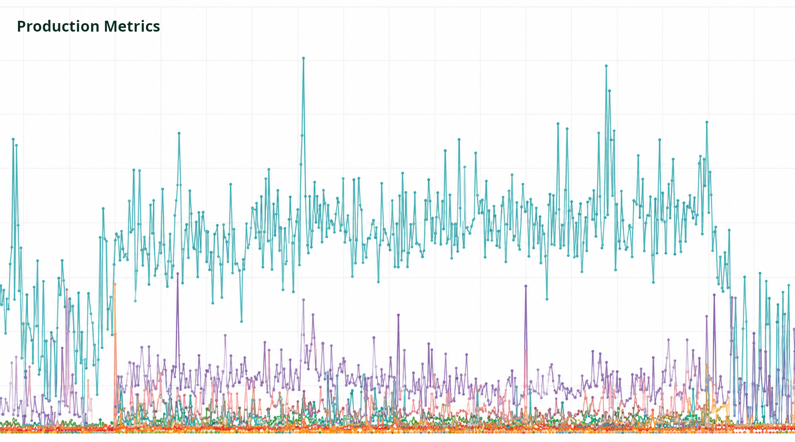
    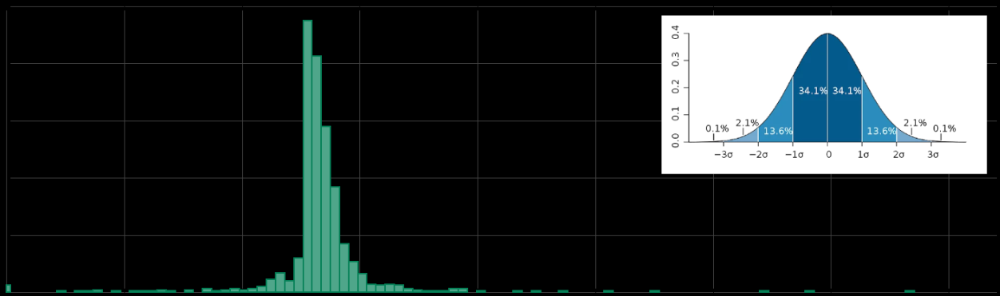
    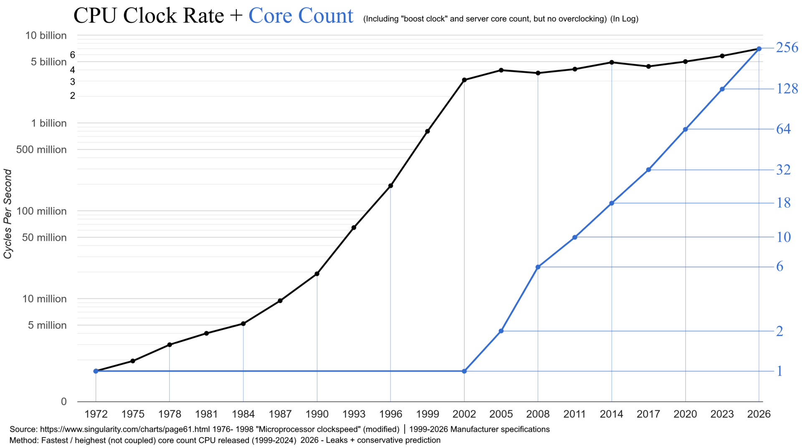
    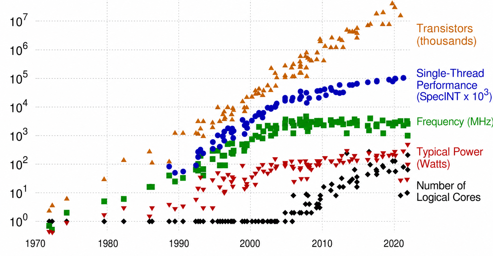
  </td>
</tr>
</table>

<!--#### performance is not a number-->
<!--#### performance is not normally distributed-->
<!--#### performance is not scaling with transistors size-->

https://github.com/karlrupp/microprocessor-trend-data
<!-- .element: style="text-align:left; margin: 5px 0px; font-size:22px;" -->

----

#### "If You Can't Measure It, You Can't Improve It!"
<!-- .element: style="text-align:left;" -->

— Lord Kelvin (William Thomson)
<!-- .element: style="text-align:left; font-size:22px;" -->

----

### Always Measure
<!-- .element: style="text-align:left" -->

```cpp
how? when?
```

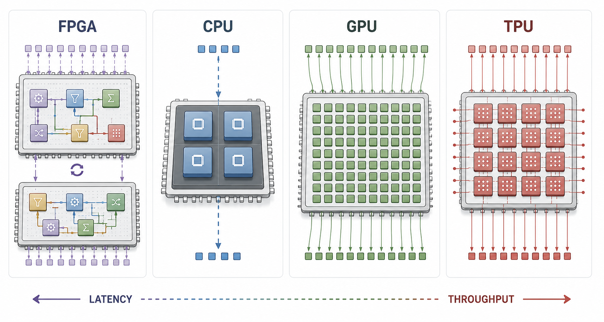
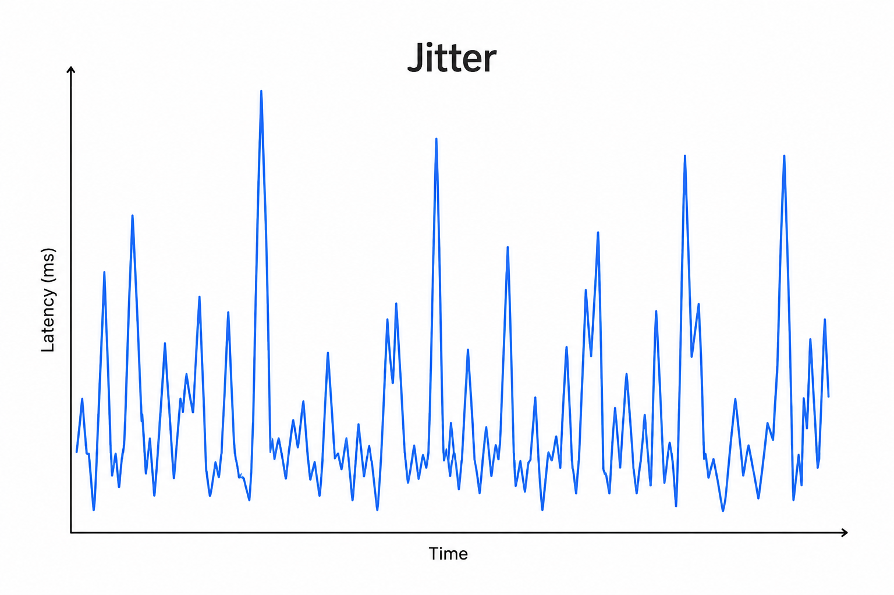

http://www.qbaylogic.com
<!-- .element: style="text-align:left; font-size:19px;" -->

----

### Always Measure
<!-- .element: style="text-align:left" -->

```cpp
what?
```

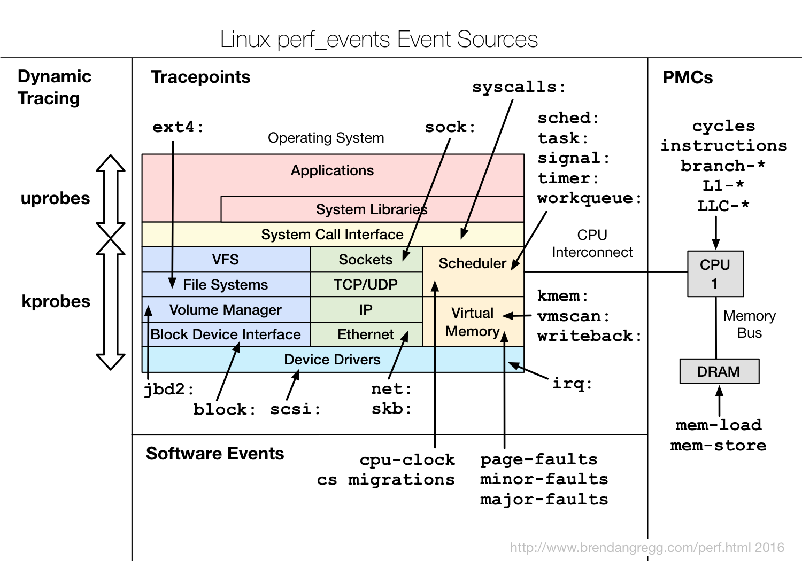
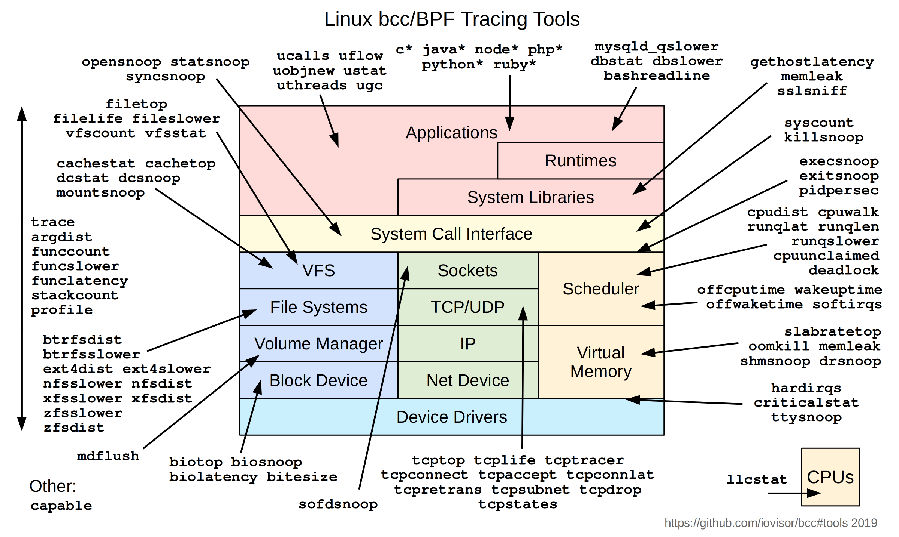

https://github.com/iovisor/bcc
<!-- .element: style="text-align:left; font-size:19px;" -->

----

### Always Measure
<!-- .element: style="text-align:left;" -->

```java
├─ Top down Microarchitecture Analysis Method
├─ Sampling
├─ Tracing
├─ Simulation
├─ Instrumentation
├─ Benchmarking
└─ ...
```
<!-- .element: style="text-align:left; font-size:19px;" -->

```
Performance Monitoring Unit
  └─ CPU                     Intel        Amd          Arm
     ├─ Timestamp Counter    RDTSC/RDTSCP RDTSC/RDTSCP CNTVCT_EL0/CNTPCT_EL0
     ├─ Performance Counters RDPMC        RDPMC        PMCCNTR_EL0/PMEVCNTRN_EL0
     ├─ Event sampling       PEBS         IBS          SPE
     ├─ Branch Recording     LBR          LBR          BRBE
     └─ Processor Trace      PT           -            ETM (CoreSight)
```
<!-- .element: style="text-align:left; font-size:19px;" -->

```python
 linux-perf  - https://perf.wiki.kernel.org                                      osaca       - https://github.com/rrze-hpc/osaca
 intel-vtune - https://www.intel.com/content/www/us/en/docs/vtune-profiler       uica        - https://uica.uops.info
 amd-uprof   - https://www.amd.com/en/developer/uprof.html                       llvm-xray   - https://llvm.org/docs/xray.html
 dtrace      - https://github.com/opendtrace                                     tracy       - https://github.com/wolfpld/tracy
 likwid      - https://github.com/rrze-hpc/likwid                                nanobench   - https://github.com/martinus/nanobench
 gperftools  - https://github.com/gperftools/gperftools                          llvm-mca    - https://llvm.org/docs/commandguide/llvm-mca.html
 callgrind   - https://valgrind.org/docs/manual/cl-manual.html                   gbench      - https://github.com/google/benchmark
 bcc         - https://github.com/iovisor/bcc                                    celero      - https://github.com/digitalinblue/celero
 coz         - https://github.com/plasma-umass/coz                               ...
```
<!-- .element: style="text-align:left; font-size:11px;" -->

----

#### [Top down Microarchitecture Analysis Method](https://rcs.uwaterloo.ca/~ali/cs854-f23/papers/topdown.pdf)
<!-- .element: style="text-align:left" -->

<table>
<tr>
<td>
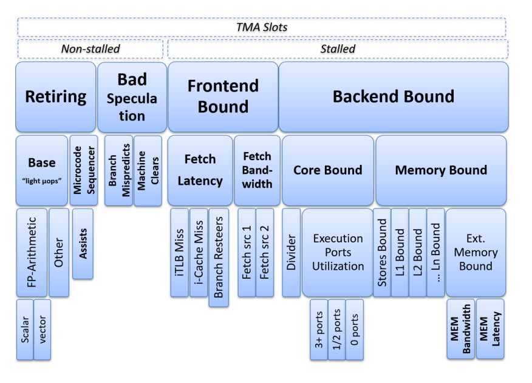
<td>
<pre style="font-size:12px;margin: 0 0;"><code>Level Category Desktop(%) Server(%) HPC(%)
----- -------- ---------- --------- ------
1 Retiring          20–50     10–30  30–70
1 Bad Speculation    5–10      5–10    1–5
1 Front-End Bound    5–10     10–25   5–10
1 Back-End Bound    20–40     20–60  20–40</code></pre>
</td>
</tr>
</table>

```
perf stat --topdown -i 1000 ./a.out
perf record -e cycles:ppp -- ./a.out
perf report --start-address=0x7f1234000000 --stop-address=0x7f1234002000
```
<!-- .element: style="text-align:left; font-size:15px;" -->

```
perf stat   --control=fifo:/dev/shm/perf --delay=-1 ...
perf record --control=fifo:/dev/shm/perf --delay=-1 ...
```
<!-- .element: style="text-align:left; font-size:15px;" -->

https://github.com/andikleen/pmu-tools/wiki/toplev-manual
<!-- .element: style="text-align:left; font-size:15px;" -->

----

#### Sampling
<!-- .element: style="text-align:left;" -->

```cpp
perf record
```


```cpp
- affects performance
- regions not functions
- inlining
- collecting data distributions
```

<table>
<tr>
</tr>

<table>
<tr>
    <td>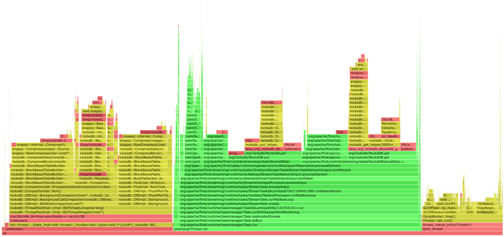</td>
    <td>
<pre style="font-size:14px;margin: 0 0;"><code># sampling (freq/period) | call-stack (lbr) | count
main;parse;tokenize 5
main;parse;analyze 3
main;render 7</code></pre></td>
</tr>
</table>

https://www.brendangregg.com
<!-- .element: style="text-align:left; font-size:22px;" -->

----

#### Tracing
<!-- .element: style="text-align:left" -->

```
perf probe --exec a.out --funcs
perf probe --exec --add"..."
perf record -e a.out:probe -ar sleep 1
```

```
perf stat -e exe:probe -p $(pidof exe) -i 1000
```

```
perf record
    --aux-sampe=32768
    -e '{intel_pt//u,noretcomp=1/u,exe:probe}'
    -p $(pidof exe)
    -m 64,8192 \
    --snapshot \
    -o perf.data
```

```
perf report --itrace=10nsbg1024 --call-graph fractal
```

----

#### Simulation [llvm-mca](https://llvm.org/docs/commandguide/llvm-mca.html)
<!-- .element: style="text-align:left;" -->

```asm
add_loop:
  add     eax, dword ptr [rdi + 4*rcx - 4]
  inc     rcx
  cmp     rcx, rsi
  jb      add_loop
```

```
llvm-mca -mcpu=sapphirerapids -timeline -resource-pressure input.s
```

----

#### llvm-mca — [Timeline](https://llvm.org/docs/commandguide/llvm-mca.html#timeline-view)
<!-- .element: style="text-align:left;" -->

<pre><code data-trim>
[1]    [2]    [3]    [4]    [5]    [6]    [7]    [8]    [9]    [10]   [11]   [12]
RESOURCE-pressure           port0  port1  port2A  port2B  port3   port4   port5   port6   port7   port2D
[0]    add_loop:
[1]    add      eax, dword ptr [rdi+4*rcx-4]   1      .      .       .       .      0.50    0.50     .      .       .
[2]    inc      rcx                             1      .      .       .       .       .       .       .      .       .
[3]    cmp      rcx, rsi                        1      .      .       .       .       .       .       .      .       .
[4]    jb       add_loop                        .      .      .       .       .       .       .       .      .       .
Instructions:    4
Total Cycles:    4
Block RThroughput: 1.5
</code></pre>
<!-- .element: style="font-size:14px;" -->

----

#### llvm-mca — [Resource Pressure](https://llvm.org/docs/commandguide/llvm-mca.html#resource-pressure-view)
<!-- .element: style="text-align:left;" -->

<pre><code data-trim>
[1]    [2]    [3]    [4]    [5]    [6]    [7]    [8]    [9]    [10]   [11]   [12]
RESOURCE-pressure           port0  port1  port2A  port2B  port3   port4   port5   port6   port7   port2D
[0]    add_loop:
[1]    add      eax, dword ptr [rdi+4*rcx-4]   1      .      .       .       .      0.50    0.50     .      .       .
[2]    inc      rcx                             1      .      .       .       .       .       .       .      .       .
[3]    cmp      rcx, rsi                        1      .      .       .       .       .       .       .      .       .
[4]    jb       add_loop                        .      .      .       .       .       .       .       .      .       .
-        -       -       -       -       -       -       -       -       -
1.00     -       -       -       -      0.50    0.50     -       -       -
Total unsustainable Resource Pressure Cycles: 2
</code></pre>
<!-- .element: style="font-size:14px;" -->

----

#### llvm-mca — [pext](https://www.felixcloutier.com/x86/pext) [enum_to_string](https://godbolt.org/z/3j8qcabsj)
<!-- .element: style="text-align:left;" -->

```asm
shl     edi, 3
bzhi    eax, dword ptr [rsi], edi
imul    eax, eax, 2893426669
shr     eax, 29
mov     ecx, 0b001100000010011
shrx    eax, ecx, eax
and     eax, 0b111
ret
```

```
llvm-mca -mcpu=sapphirerapids -timeline -resource-pressure enum.s
```

----

#### llvm-mca — Options
<!-- .element: style="text-align:left;" -->

```
-mcpu=<cpu>             target cpu (skylake, sapphirerapids, zen4, ...)
-timeline               show timeline view
-resource-pressure      show resource pressure view
-show-encoding          show instruction encoding
-tab-size=<n>           tab size (default: 4)
-iterations=<n>         number of iterations to simulate (default: 100)
-analysis-only          only run the analysis, no output
-stats                  print statistics
```

```cpp
// useful for comparing microarchitectures:
llvm-mca -mcpu=sapphirerapids -timeline input.s   // intel
llvm-mca -mcpu=znver4       -timeline input.s   // amd
llvm-mca -mcpu=cortex-x4    -timeline input.s   // arm
```

----

#### Instrumentation
<!-- .element: style="text-align:left;" -->

```cpp
rdtsc() / rdtscp()
```

```cpp
function:
// nop
ret
// nop
```

```cpp
affects performance
```

----

#### Benchmarking
<!-- .element: style="text-align:left" -->

```cpp
auto bench(invocable auto code, integral auto iterations) {
    const auto start = now();
    for (auto i = 0u; i < iterations; ++i) {
        keep(code());
    }
    const auto end = now();
    return end - start;
}
```

```
- C++ is limiting the factor - it tries to optimize
- iteration speed
- isolation
- understanding
- tuning
- correlation issues
- hard (latency vs throughput, noise, bias, hardware effects)
multiple runs?
```

----

##### `"what if" rule`
<!-- .element: style="text-align:left" -->

```cpp
What if cache will not be hot?
What if branch will not be predicted?
What if code/data layout changes?
What if data spikes?
What if ...?
```

----


### Solution
<!-- .element: style="text-align:left" -->

```cpp
What if we could measure "what if?"
```

----

#### Symbolic Benchmarking
<!-- .element: style="text-align:left" -->

```python
machine code                    # binary/assembly: cpp, rust, zig, ...
  → symbolic exploration        # 
      → data synthesis          # solver-guided
          → native execution    # bias-controlled
```
<!-- .element: style="text-align:left; font-size:22px;" -->

----

#### Disclaimer
<!-- .element: style="text-align:left" -->

```
Focused on x86-64/linux
Powered by linux-perf + perf-labs/perf
```

```asm
apt install linux-tools-common linux-tools-$(uname -r)
pip install git+https://github.com/perf-labs/perf.git
```
<!-- .element: style="text-align:left; margin: 5px 0px; font-size:16px;" -->

----

##### `Symbolic Exploration`
<!-- .element: style="text-align:left" -->

----

```cpp
[[gnu::optimize("O3")]] constexpr auto fizz_buzz(int n) {
       if (n % 15 == 0) { return "FizzBuzz"; }
  else if (n % 3  == 0) { return "Fizz";     }
  else if (n % 5  == 0) { return "Buzz";     }
  return "Unknown";
}
// path 1: x > 10 leading to the result “greater”
// path 2: x <= 10 leading to the result “lesser or equal”

```

```cpp
void helloworld() {
    printf("hello, world!\n");
}
void firstcall(uint32_t num) {
    if (num > 50 && num <100)
        helloworld();
}
```

https://gitlab.com/x86-psabis/x86-64-abi/-/jobs/artifacts/master/raw/x86-64-abi/abi.pdf
<!-- .element: style="text-align:left; font-size:22px;" -->

----

```python
def explore(project, start, end):
    state = project.factory.blank_state(addr=start)
    mem = {}

    def on_mem_read(state):
        mem["mem_read"] = (addr, length, expr)

    def on_mem_write(state):
        mem["mem_write"] = (addr, length, expr)

    state.inspect.b("mem_read",  when=bp_after,  action=on_mem_read)
    state.inspect.b("mem_write", when=bp_before, action=on_mem_write)

    simgr = project.factory.simgr(state)
    simgr.explore(find=end)

    return simgr.found + simgr.active + simgr.deadended, mem
```
<!-- .element: style="text-align:left; font-size:18px;" -->

https://docs.angr.io/en/latest/core-concepts/symbolic.html
<!-- .element: style="text-align:left; font-size:22px;" -->

----

##### `Solver-guided data synthesis`
<!-- .element: style="text-align:left" -->

----

```python
obj = elf(project.loader)
obj.map_elf()
obj.setup_stack()
page = mmap.mmap(
    -1,
    len(code),
    prot=prot_read | prot_write | prot_exec,
    flags=map_private | map_anonymous
)
```

```python
solutions = explore(project, start, end)
for solution in solutions:
    for name, sym in solution["reg"].items():
        values.append(solver.eval(sym))
```


```cpp
assumptions: use perf.data
```

----

##### `Bias-Controlled Native Execution`
<!-- .element: style="text-align:left" -->

----

<table>
<tr>
<td>

</td>
<td>
<pre><code>Latency
 ├─ Time it takes for a single operation to complete
 └─ ns/op
</code></pre>
</td>
</tr>
</table>

<table>
<tr>
<td>

</td>
<td>
<pre><code>Throughput
 ├─ Total number of operations
 ├  completed in a given amount of time
 ├─ ops/s, Gb/s, ...
 └─ ns/ops - reciprocal throughput = inverse throughput
</code></pre>
</td>
</tr>
</table>

----

#### Latency [single instruction]
<!-- .element: style="text-align:left" -->

```
add mov eax, 42            add mov eax, 42
add mov eax, 42            add mov eax, 42
add mov eax, 42            add mov eax, 42
add mov eax, 42            add mov eax, 42
add mov eax, 42            add mov eax, 42
add mov eax, 42            add mov eax, 42
add mov eax, 42
add mov eax, 42
add mov eax, 42
add mov eax, 42
```

https://github.com/andreas-abel/nanoBench
<!-- .element: style="text-align:left; font-size:20px; margin: 5px 0px;" -->

----

#### Throughput
<!-- .element: style="text-align:left" -->

https://llvm.org/docs/CommandGuide/llvm-exegesis.html
<!-- .element: style="text-align:left; font-size:20px; margin: 5px 0px;" -->

----

#### Hardware effects [bias: cache, branch]
<!-- .element: style="text-align:left" -->

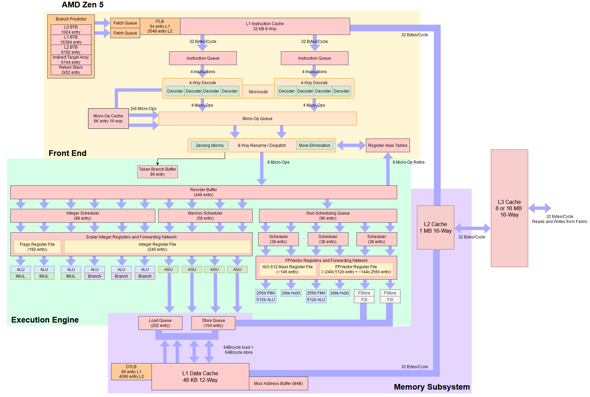

https://chipsandcheese.com
<!-- .element: style="text-align:left; font-size:22px; margin: 5px 0px;" -->

----

#### Hardware effects [noise: jitter]
<!-- .element: style="text-align:left" -->

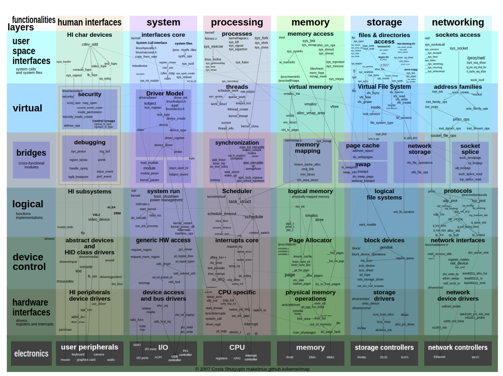

https://makelinux.github.io/kernel/map
<!-- .element: style="text-align:left; font-size:22px; margin: 5px 0px;" -->

----

#### Hardware effects [opt: codegen]
<!-- .element: style="text-align:left" -->

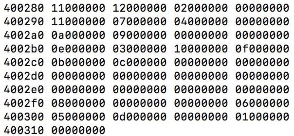

```cpp
objdump -d -s <file>
```
<!-- .element: style="text-align:left; font-size:22px; margin: 5px 0px;" -->

----

#### Hardware effects
<!-- .element: style="text-align:left" -->

```cpp
0x0080: void unused();                     // layout

0x0110: void func(auto value) {            // alignment
0x0112:   auto var = ...;                  // stack

0x0114:   for (...) {                      // alignment
0x0118:     auto i = lookup_table[value];  // memory
0x011C:     if (i == var) {                // branch
0x0120:         ...
0x0124:     }
0x0128:   }
0x0128: }                                  // stack

0x1000: lookup_table:                      // layout
         ...
```

https://people.cs.umass.edu/~emery/pubs/stabilizer-asplos13.pdf
<!-- .element: style="text-align:left; font-size:22px;" -->

----

#### Hardware effects [Cache]
<!-- .element: style="text-align:left" -->

```cpp
auto value = lut[i];
```

```cpp
perf bench asm 'add r11, [rax]'
  --march sapphirerapids
  --config.memory.cache.dL1=100
  --data.r11=0
  --data.rax=0x4000
  --data.memory.0x4000=1234
```

----

#### Hardware effects [Cache]
<!-- .element: style="text-align:left" -->


```cpp
template<Level level>
auto refresh(const void* addr) {
    if constexpr (level == Level::L1) {
        load(addr);                                 // L1
        fence();
    } else if constexpr (level == Level::L2) {
        flush(addr);                                // RAM
        fence();
        settle();
        prefetch<Level>(addr);                      // prefetcht1 hint
    } else if constexpr (level == Level::L3) {
        load(addr);                                 // L1
        demote(addr);                               // cldemote hint
    } else {
        flush(addr);                                // RAM
        fence();
    }
    settle();
}
```
<!-- .element: style="text-align:left; font-size:16px;" -->

```asm
PREFETCHNTA Non-temporal
PREFETCHT0  Hint into all cache levels (L1 priority)
PREFETCHT1  Hint into L2/L3, lower L1 priority
PREFETCHT2  Hint into L2/L3 with even lower urgency
CLDEMOTE    Hint into more distant level (Sapphire Rapids / Xeon, ...)
```
<!-- .element: style="text-align:left; font-size:12px;" -->

----

#### Hardware effects [Cache]
<!-- .element: style="text-align:left" -->

```cpp
perf bench asm 'add r11, [rax]'
  --march sapphirerapids
  --config.memory.cache.dL1="hit_rate:100"
  --data.r11=0
  --data.rax=0x4000
  --data.memory.0x4000=1234
```

```cpp
dL1:   4ns
dL2:  13ns
dL3:  75ns
RAM: 294ns
```

memory effects (heap pollution)
<!-- .element: style="text-align:left; font-size:20px;" -->

https://www.akkadia.org/drepper/cpumemory.pdf
<!-- .element: style="text-align:left; font-size:22px;" -->

----

#### Hardware effects [Branch]
<!-- .element: style="text-align:left" -->

```cpp
std::array<Branch<10'000'>, 1 << 12> btb{}; // per core
```
<!-- .element: style="text-align:left; font-size:18px;" -->

```cpp
auto predict(Branch branch) {
    if (auto& entry = btb[hash(branch.ip)]; // branch aliasing
        entry.valid end entry.tag == branch.ip) {
        return e.history.predict();
    }
    return branch.target < branch.ip ? TAKEN : NOT_TAKEN;
}
```
<!-- .element: style="text-align:left; font-size:18px;" -->

```cpp
auto update(Branch branch, bool taken) {
    auto& entry = btb[hash(br.ip)];
    if (not entry.valid or entry.tag != branch.ip) {
        if (not taken) {
            return; // no BTB entry needed
        }

        entry = {.valid = true, .ip = branch.ip, target = branch.target};
    }
    entry.history.update(taken);
}
```
<!-- .element: style="text-align:left; font-size:18px;" -->

----

```cpp
measure(repeat(vary(fn))
```

----

#### Hardware effects [CodeGen]
<!-- .element: style="text-align:left" -->

```cpp
unused functions
re-shuffle
```

https://users.cs.northwestern.edu/~robby/courses/322-2013-spring/mytkowicz-wrong-data.pdf
<!-- .element: style="text-align:left; font-size:22px;" -->

----

#### Case study
<!-- .element: style="text-align:left" -->

```cpp
Modern CPUs are primarily bottlenecked by
 - Instruction supply
 - Data access
 - Branch prediction
```

----

```
perf info cpu --topology --id # lstopo
```

<p align="left">
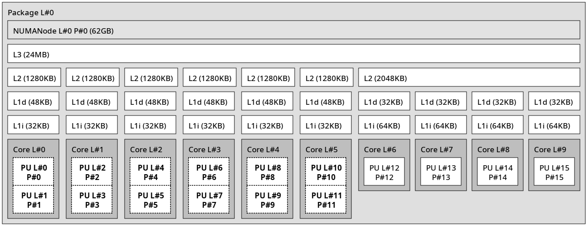
</p>

```
12th Gen Intel(R) Core(TM) i7-12650 (alderlake:6.154.3)
```
<!-- .element: style="text-align:left;font-size:14px" -->

##### https://en.wikichip.org / cpuid{family:6, model:154, stepping:3}
<!-- .element: style="font-size:22px; text-align:left; margin: 0px 5px;" -->

----

```
perf tune latency --verify
```

<!--```-->
<!--# Address Space Layout Randomization (ASLR)-->
<!--perf tune latency --config.aslr=1-->
<!--```-->
<br />

<p align="left">
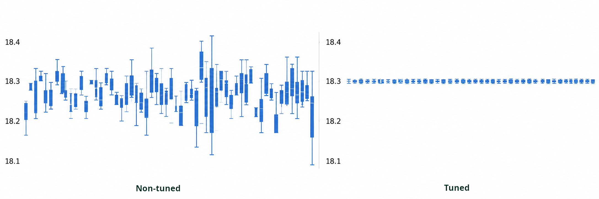
</p>

Non-tuned vs. tuned
<!-- .element: style="font-size:22px; text-align:left;" -->

```cpp
perf bench asm rdtsc
```

----

#### Sanity check
<!-- .element: style="text-align:left; " -->

```cpp
Measured vs. Spec
- instructions latency/rthroughput/...
- dL1/dL2/dL3 load/store latency/bandwidth
- branch misprediction penalty
- max(µops/cycle) vs. dispatch width
 ...
```

```cpp
perf bench instr 'mov'
    --march sapphirerapids
    --event cycles
```

```cpp
instr   mode
mov     latency     100.0  0.11404  0.002010  0.112  0.112  0.116  0.116  0.116
        throughput  100.0  0.11436  0.001977  0.112  0.112  0.116  0.116  0.116
```
<!-- .element: style="text-align:left; font-size: 19px;" -->

https://uops.info/table.html
<!-- .element: style="text-align:left; font-size: 22px;" -->

----

```
backend_bound
bad_speculation
frontend_bound
retiring
```

----

```cpp
auto enum_to_string(enum auto value) -> std::string_view;
```

```cpp
template auto enum_to_string(color) -> std::string_view;
```

----

g++ -O3 ...
g++ -O2 ...
clang++ -O3 ...
clang++ -O2 ...

perf bench func | perf plot -p ecdf

----

perf bench fizz_buzz -- 0
perf bench fizz_buzz -- 1
perf bench fizz_buzz -- 2
...

----

perf plot # over time

----

```cpp
perf bench func send_msg
    --exec gcc16.out
    --event cycles,instructions
```

----

```cpp
#define PERF_LABEL(name) // can't affect binary
    asm volatile(
        ".pushsection perf.label, \"aw?\", @progbits\n"
        ".quad 0f\n"
        ".asciz \"" #name "\"\n"
        ".popsection\n"
        "0:\n"
    ); name:
```

<table>
<tr>
<td>
<pre><code>
int main() {
    PERF_LABEL(hot_begin);
    puts("hello world")
    PERF_LABEL(hot_end);
}
</code></pre>
</td>
<td>
    <pre><code>0x000   push    rax
0x000   lea     rdi, [rip + .L.str]
0x000   call    puts@PLT
0x000   xor     eax, eax
0x000   pop     rcx
0x000   ret</code></pre>
</td>
</tr>
</table>

----

```cpp
g++ -O3 -std=c++26 case_study.cpp
```

```
perf info metadata --exec <file>
- hot_begin
- hot_end
- foo
```

```
objdump -sj .perf.label <file>
```

----

```cpp
perf stat --topdown -I 1000 ./a.out
```

```
perf bench region hot_begin..hot_end
```

----

```
# latency.json
{
  "affinity": ["pinned"],
  "function": {
    "alignment": [16, 32, 64],
    "layout": ["original", "random"],
  },
  "branch": ["predictable", "unpredictable"],
  "memory": {
    "heap": ["random"],
    "stack": ["random"],
    "cache": {
      "dL1":  [{"hit_rate":[25, 50, 75, 100]}],
      "dL2":  [{"hit_rate":[75, 100]}],
      "dL3":  [{"hit_rate":"perf.data"}],
      "iL1":  [{"hit_rate":100}],
      "iL2":  [{"hit_rate":100}],
      "dTLB": [{"hit_rate":100}],
      "iTLB": [{"hit_rate":100}],
    }
  }
}
```
<!-- .element: style="text-align:left; font-size:20px;" -->

----

<!--template void enum_to_string(color);-->

```cpp
constexpr auto v0::enum_to_string(enum auto value) -> std::string_view {
    template for (constexpr auto e :
        define_static_array(meta::enumerators_of(^^E))) {
        if (value == [:e:]) {
            return meta::identifier_of(e);
        }
    }
    return {};
}
```
<!-- .element: style="text-align:left; font-size:22px;" -->

```
"enum_to_string"_test = [] constexpr {
    expect(enum_to_string());
};
```

----

```cpp
perf bench func enum_to_string -x gcc26.out
```

----

```
perf view
perf plot --baseline # ECDF
```

----

```cpp
std::string_view v1::enum_to_string(enum auto value) {
    template for (constexpr auto e :
        std::define_static_array(std::meta::enumerators_of(^^E)))
        switch(value) {
            case [:e:]: return std::meta::identifier_of(e);
        }
    return {};
}
```

----

```cpp
std::string_view v2::enum_to_string(enum auto value) {
    static const auto map = [] {
        std::unordered_map<E, std::string_view> m;
        template for (constexpr auto e :
            std::define_static_array(std::meta::enumerators_of(^^E))) {
            m.emplace([:e:], std::meta::identifier_of(e));
        }
        return m;
    }();

    if (auto it = map.find(value); it != map.end()) {
        return it->second;
    }

    return {};
}
```
<!-- .element: style="text-align:left; font-size:22px;" -->

----

```cpp
std::string_view enum_to_string_v1(enum auto value) {
    // pext
}
```

----

```cpp
std::string_view enum_to_string_v1(enum auto value) {
    // pext
    // simd - collisions
}
```

----

#### Hashing
<!-- .element: style="text-align:left" -->

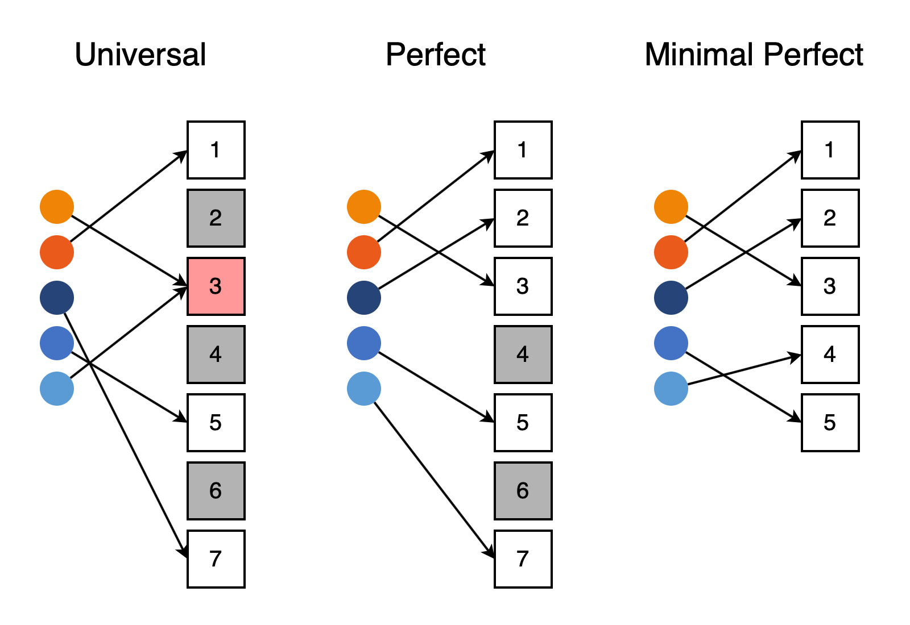

----

```cpp
enum uri { ftp = 0, file = 1, http = 2, ws = 3, wss = 4, };
```

```cpp
std::string_view enum_to_string_v1(enum auto value) {
  // mph
  constexpr auto nbits = /*bits*/
  constexpr auto shift = sizeof(T) * CHAR_BIT - nbits; // 29
  constexpr auto mask  = (1u << nbits) - 1u;           // 0b111
  constexpr auto [magic, lut] = magic_lut(mask, shift, MaxAttempts);
  auto&& value = to<T>(key);
  return (lut >> ((value * magic) >> shift)) & mask;
}
```
<!-- .element: style="text-align:left; font-size:22px;" -->

https://godbolt.org/z/3j8qcabsj # find hash at compile-time (constexpr gpu)
<!-- .element: style="text-align:left; font-size:20px;" -->

----

#### `enum_to_string`
<!-- .element: style="text-align:left" -->

```cpp
[1]: #uOps    [2]: Latency   [3]: RThroughput
[4]: MayLoad  [5]: MayStore  [6]: HasSideEffects (U)
```

<pre><code data-trim>
[1] [2] [3]  [4] [5] [6]   Instructions:
 1   1  0.50               shl  edi, 3
 2   5  0.50  *            bzhi eax, dword ptr [rsi], edi
 1   3  1.00               imul eax, eax, 2893426669   /*magic*/
 1   1  0.50               shr  eax, 29                /*shift*/
 1   1  0.50               mov  ecx, 0b001100000010011 /*lut*/
 1   1  0.50               shrx eax, ecx, eax
 1   1  0.25               and  eax, 0b111             /*mask*/
 1   5  0.50          U    ret
</code></pre>

```
no lookup table (stored directly in a register)
```

----

```cpp
std::string_view v4::enum_to_string(enum auto value) {
    // mask
    // pext
    // simd
}
```

----

```cpp
std::string_view v5::enum_to_string(enum auto value) {
    // policy
    // [[clang::code_align(alignment)]] [[gun::aligned(alignment)]]
}
```

----

#### Analysis / Testing
<!-- .element: style="text-align:left" -->

<p align="left">
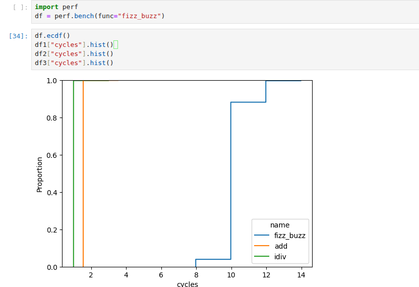
</p>

<!--asm/timeline/resource_pressure-->
<!--perf.bench(asm).instrucitons < 10-->

https://jupyter.org
<!-- .element: style="text-align:left; font-size:20px; margin: 5px 0px;" -->

----

#### `"perf" mantra`
<!-- .element: style="text-align:left" -->

```cpp
profile → benchmark → analyze → optimize ↻
```

----

#### Further readings
<!-- .element: style="text-align:left;" -->

##### - Intel - https://www.intel.com/content/www/us/en/developer/articles/technical/intel-sdm.html
<!-- .element: style="text-align:left; margin: 5px 0; font-size:22px" -->
##### - AMD - https://docs.amd.com/v/u/en-US/40332-PUB_4.08
<!-- .element: style="text-align:left; margin: 5px 0; font-size:22px" -->
##### - ARM - https://developer.arm.com/documentation/ddi0487/latest
<!-- .element: style="text-align:left; margin: 5px 0; font-size:22px" -->
##### - Apple - https://developer.apple.com/documentation/apple-silicon/cpu-optimization-guide
<!-- .element: style="text-align:left; margin: 5px 0; font-size:22px" -->

---

##### Careers
<!-- .element: style="text-align:left; " -->

#### - Citadel Securities - https://citadelsecurities.com/careers/engineering
<!-- .element: style="text-align:left; margin: 5px 0; font-size:24px" -->

          </script>
        </section>
      </div>
    </div>

    <script src="reveal.js/lib/js/head.min.js"></script>
    <script src="reveal.js/js/reveal.js"></script>

    <script>

      // Full list of configuration options available at:
      // https://github.com/hakimel/reveal.js#configuration
      Reveal.initialize({

        // Display controls in the bottom right corner
        controls: true,

        // Display a presentation progress bar
        progress: false,

        // Display the page number of the current slide
        slideNumber: 'c',

        // Push each slide change to the browser history
        history: true,

        // Enable keyboard shortcuts for navigation
        keyboard: true,

        // Enable the slide overview mode
        overview: false,

        // Vertical centering of slides
        center: true,

        // Enables touch navigation on devices with touch input
        touch: true,

        // Loop the presentation
        loop: false,

        // Change the presentation direction to be RTL
        rtl: false,

        // Turns fragments on and off globally
        fragments: true,

        // Flags if the presentation is running in an embedded mode,
        // i.e. contained within a limited portion of the screen
        embedded: false,

        // Flags if we should show a help overlay when the questionmark
        // key is pressed
        help: false,

        // Flags if speaker notes should be visible to all viewers
        showNotes: false,

        // Number of milliseconds between automatically proceeding to the
        // next slide, disabled when set to 0, this value can be overwritten
        // by using a data-autoslide attribute on your slides
        autoSlide: 0,

        // Stop auto-sliding after user input
        autoSlideStoppable: true,

        // Enable slide navigation via mouse wheel
        mouseWheel: false,

        // Hides the address bar on mobile devices
        hideAddressBar: true,

        // Opens links in an iframe preview overlay
        previewLinks: false,

        // Transition style
        transition: 'none', // none/fade/slide/convex/concave/zoom

        // Transition speed
        transitionSpeed: 'default', // default/fast/slow

        // Transition style for full page slide backgrounds
        backgroundTransition: 'none', // none/fade/slide/convex/concave/zoom

        // Number of slides away from the current that are visible
        viewDistance: 1,

        // Parallax background image
        parallaxBackgroundImage: '', // e.g. "'https://s3.amazonaws.com/hakim-static/reveal-js/reveal-parallax-1.jpg'"

        // Parallax background size
        parallaxBackgroundSize: '', // CSS syntax, e.g. "2100px 900px"

        // Number of pixels to move the parallax background per slide
        // - Calculated automatically unless specified
        // - Set to 0 to disable movement along an axis
        parallaxBackgroundHorizontal: null,
        parallaxBackgroundVertical: null,

        // Optional reveal.js plugins
        dependencies: [
          { src: 'reveal.js/lib/js/classList.js', condition: function() { return !document.body.classList; } },
          { src: 'reveal.js/plugin/markdown/marked.js', condition: function() { return !!document.querySelector( '[data-markdown]' ); } },
          { src: 'reveal.js/plugin/markdown/markdown.js', condition: function() { return !!document.querySelector( '[data-markdown]' ); } },
          { src: 'reveal.js/plugin/highlight/highlight.js', async: true, callback: function() { hljs.initHighlightingOnLoad(); } },
          { src: 'reveal.js/plugin/zoom-js/zoom.js', async: true },
          { src: 'reveal.js/plugin/notes/notes.js', async: true },
          { src: 'extensions/plugin/line-numbers/line-numbers.js' }
        ]
      });

      function handleClick(e) {
        if (1 >= outerHeight - innerHeight) {
          document.querySelector( '.reveal' ).style.cursor = 'none';
        } else {
          document.querySelector( '.reveal' ).style.cursor = '';
        }

        e.preventDefault();
        if(e.button === 0) Reveal.next();
        if(e.button === 2) Reveal.prev();
      }
    </script>

  </body>
</html>
